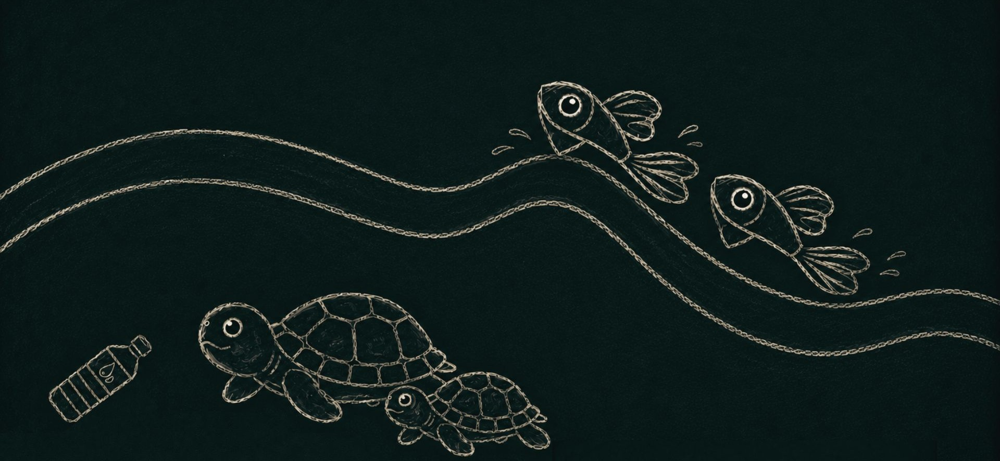

Letícia Souza
"Pra quem tem fé a vida nunca tem fim." - O Rappa
"Pra quem tem fé a vida nunca tem fim." - O Rappa
Me chamo Letícia, tenho 18 anos e atualmente estou no primeiro semestre do curso de Ciência da Computação na PUCPR. Sou uma pessoa apaixonada por aprender coisas novas, por artes, design, lógica e programação.
Desde pequena sempre fui muito curiosa e criativa, o que me levou a explorar diversas áreas do conhecimento. Acredito que a combinação de habilidades técnicas e criativas é essencial para inovar e resolver problemas de maneira eficaz.
Todos finais de semana eu assisto documentários expecialmente sobre ciência e casos reais.
Gosto de escutar músicas enquanto faço minhas atividades .
Gosto de desenhar como forma de distração
| Disciplina | Por que gosto? |
|---|---|
| Experiência Criativa | Gosto da parte criativa, front-end, etc. |
| Raciocinio Algoritimico | Gosto dos desafios de lógica. |
| Filosofia | Acredito que a filosofia é fundamental para o desenvolvimento do pensamento crítico e da compreensão do mundo. |

Aplicativo desenvolvido para a coenscentização de microplásticos.
Ver Projeto